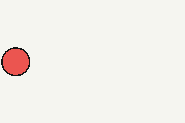

A normal paragraph with default positioning. This paragraph will fit itself to the width of the containing element, wrapping to a new line rather than spilling out of the container.

Subsequent paragraphs will follow the normal flow, appearing on a new line underneath.
A paragraph positioned absolutely in relation to the body: in this case, 200px from the left, 750px from the top. It will break out of its containing element, but will be constrained by the width of the browser window. If we want to give an absolute-positioned element a smaller width, we must specify it explicitly in the CSS.
A paragraph positioned relative to where it would ordinarily appear by default. It adopts the width of its parent element, but will be offset by the values specified in the CSS.
A Fixed paragraph that is positioned relative to browser window, and will stay in this position while we scroll.